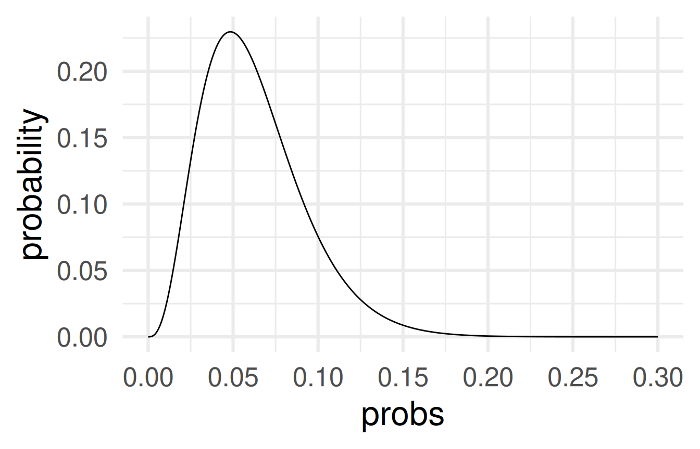
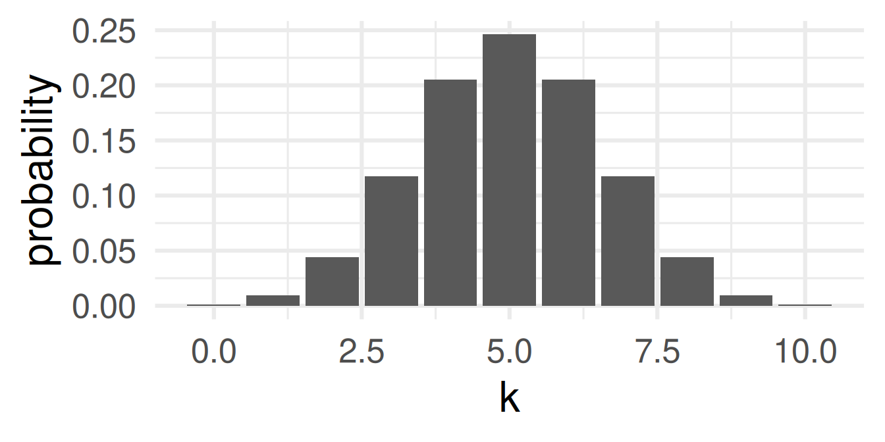
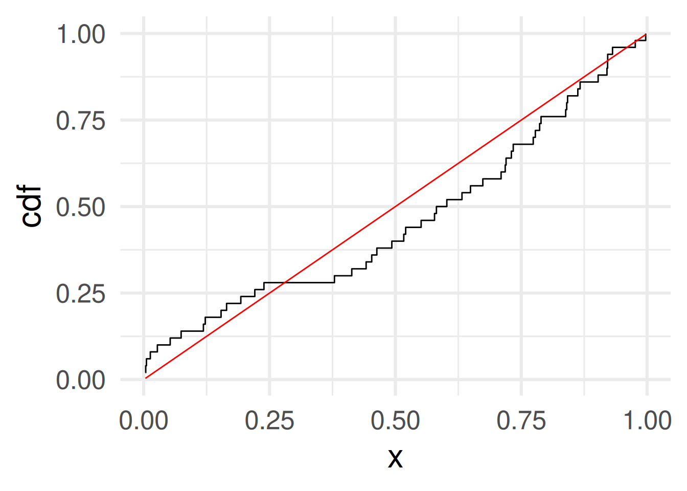
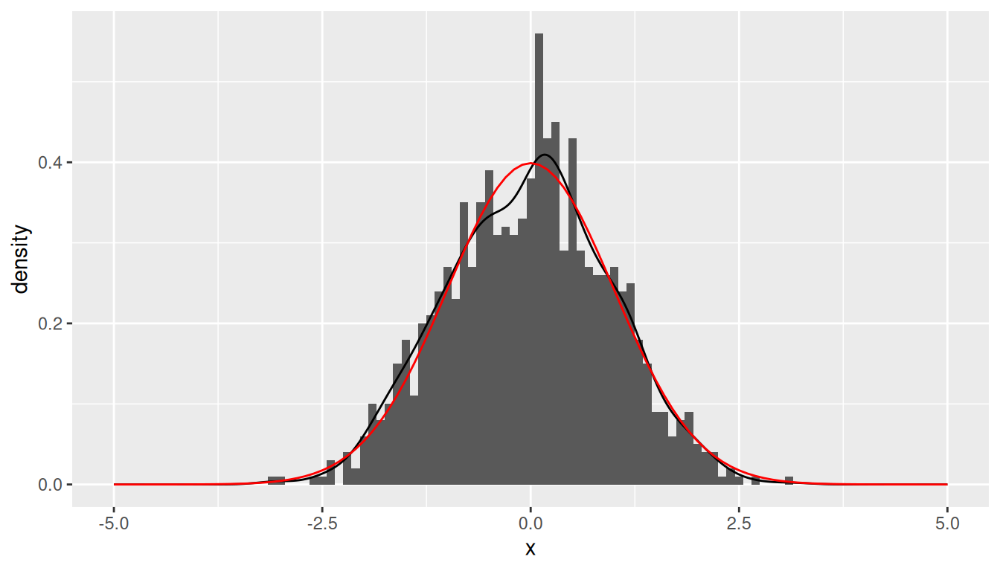

tibble(Value = 0:15,
pmf=c(0,0,1,2,3,4,5,6,5,4,3,2,1,0,0,0)/36) |>
ggplot(aes(Value,pmf)) + geom_line() + geom_point() +
theme_minimal(base_size = 20)W#13: Random Variables, Probability Distributions, Central Limit Theorem
1 Random variables
1.1 How to think about random variables
In statistics (that means, in data):
A theoretical assumption about a numerical variable in a data frame.
. . .
In probability (that means, in theory):
A mapping of events (subsets of a sample space of atomic events) to numerical values.
. . .
Why?
For random variables we can:
- Conceptualize meaningful values to random events like payoffs, costs, or grades
- Compute probabilities of these numerical values
- Compute the expected value of a numerical variable
- Theorize about their distribution and their distribution and density functions (e.g. binomial, normal, lognormal, etc.)
1.2 Random variable mathematically
A random variable is
- a function \(X: S \to \mathbb{R}\) from a sample space \(S\) to the real numbers \(\mathbb{R}\),
- which assigns a value to each atomic event in the sample space.
Together with a probability function \(\text{Pr}: \mathcal{F}(S)\to [0,1]\) probabilities can be assigned to values of the random variable (see the probability mass function in explained later).
Fun fact: The random variable is neither random nor a variable but a function.
1.3 Examples of random variables
3 random processes spaces and an example of a random variable \(X\):
Two coin tosses:
Sample space: \(\{HH, HT, TH, TT\}\)
We define \(X\) as the number of HEADS.
Values of \(X\): \(HH \to 2\), \(HT \to 1\), \(TH \to 1\), and \(TT \to 0\).
. . .
62 randomly selected organ donations:
Sample space: All possibilities to select 62 organ donations
We define \(X\) to be the number of complications (compare Hypothesis Testing material).
Values of \(X\): 0, 1, 2,…, 61, 62
. . .
Select a random palmer penguin:
We define \(X\) as its flipper length.
Sample space: All penguins in dataset
Values of \(X\): flipper_length_mm
. . .
Summary: A random variable is a way to look at a numerical aspect of a sample space. It often simplfies because more atomic events may be mapped to the same number.
1.4 Discrete vs. continuous
A random variable \(X\) can be either
Discrete: \(X\) can take only a finite number of possible numeric values. Or:
Continuous: \(X\) can take values from an infinite set of real numbers (for example an interval or all positive real numbers)
. . .
Are these random variables discrete or continuous?
- Number of HEADs of two coin tosses: Discrete
- Number of complications in 62 organ donations: Discrete
- Flipper length of a random row in palmer penguins data frame: Discrete
- Flipper length of a random penguin in the world: Continuous
. . .
For working with data: Every data frame is finite, so every random variable built on data variable dataset is technically discrete. However, it can make sense to assume it as continuous because of its continuous nature. (In variables of continuous nature, many or all values are unique.)
1.5 Probability mass function (pmf)
For
- a discrete random variable \(X\) and
- a probability function \(\text{Pr}\)
the probability mass function \(f_X: \mathbb{R} \to [0,1]\) is defined as
\[f_X(x) = \text{Pr}(X=x),\]
where \(\text{Pr}(X=x)\) is an abbreviation for \(\text{Pr}(\{a\in S\text{ for which } X(a) = x\})\).
1.6 Example pmf for 2 coin tosses
Two coin tosses \(S = \{HH, HT, TH, TT\}\)
- We define \(X\) to be the number of heads:
\(X(HH) = 2\), \(X(TH) = 1\), \(X(HT) = 1\), and \(X(TT) = 0\).
- We assume the probability function \(\text{Pr}\) assigns for each atomic event a probability of 0.25.
- Then the probability mass function is \[\begin{align} f_X(0) = & \text{Pr}(X=0) = \text{Pr}(\{TT\}) & = 0.25 \\ f_X(1) = & \text{Pr}(X=1) = \text{Pr}(\{HT,TH\}) & = 0.25 + 0.25 = 0.5 \\ f_X(2) = &\text{Pr}(X=2) = \text{Pr}(\{HH\}) & = 0.25\end{align}\]
- Note that \(\text{Pr}(\{HT,TH\}) = \text{Pr}(\{HT\}) + \text{Pr}(\{HT\})\) by adding the probabilities of the atomic events.
- For all \(x\) which are not 0, 1, or 2: Obviously, \(f_X(x) = 0\).
1.7 Example: Roll two dice 🎲 🎲
Random variable: The sum of both dice.
. . .
Events: All 36 combinations of rolls 1+1, 1+2, 1+3, 1+4, 1+5, 1+6, 2+1, 2+2, 2+3, 2+4, 2+5, 2+6, 3+1, 3+2, 3+3, 3+4, 3+5, 3+6, 4+1, 4+2, 4+3, 4+4, 4+5, 4+6, 5+1, 5+2, 5+3, 5+4, 5+5, 5+6, 6+1, 6+2, 6+3, 6+4, 6+5, 6+6
. . .
Possible values of the random variable: 2, 3, 4, 5, 6, 7, 8, 9, 10, 11, 12 (These are numbers.)
. . .
Probability mass function: (Assuming each number has probability of \(\frac{1}{6}\) for each die.)
\(\text{Pr}(2) = \text{Pr}(12) = \frac{1}{36}\)
\(\text{Pr}(3) = \text{Pr}(11) = \frac{2}{36}\)
\(\text{Pr}(4) = \text{Pr}(10) = \frac{3}{36}\)
\(\text{Pr}(5) = \text{Pr}(9) = \frac{4}{36}\)
\(\text{Pr}(6) = \text{Pr}(8) = \frac{5}{36}\)
\(\text{Pr}(7) = \frac{6}{36}\)
1.8 Expected value
- For a discrete random variable \(X\), there is only a finite set of number \(X\) can take: \(\{x_1,\dots,x_k\}\).
- So, the probability mass function has maximally \(k\) positive probabilities: \(p_1,\dots,p_k\)
- Recall \(p_i = f_X(x_i) = \text{Pr}(X=x_i) = \text{Pr}(\{a \in S \text{ for which } X(a) = x_i \})\).
The expected value of \(X\) is defined as \(E(X) = \sum_{i=1}^k p_i x_i = p_1x_1 + \dots + p_kx_k.\)
Think of \(E(X)\) as the probability weighted arithmetic mean of all possible values of \(X\).
. . .
Examples: \(X\) one roll of a die 🎲.
\(E(X) = 1\cdot\frac{1}{6} + 2\cdot\frac{1}{6} + 3\cdot\frac{1}{6} + 4\cdot\frac{1}{6} + 5\cdot\frac{1}{6} + 6\cdot\frac{1}{6} = \frac{21}{6} = 3.5\)
\(X\) sum of two die rolls 🎲🎲.
\(E(X) = 2\cdot\frac{1}{36} + 3\cdot\frac{2}{36} + 4\cdot\frac{3}{36} + 5\cdot\frac{4}{36} + \dots + 10\cdot\frac{3}{36} + 11\cdot\frac{2}{36} + 12\cdot\frac{1}{36} = 7\)
\(X\) flipper length in penguins from Palmer penguins: \(E(X) = 200.9152047\)
mean(penguins$flipper_length_mm, na.rm = TRUE)
1.9 Distributions of Random Variables
- The distribution of a random variable \(X\) is a table, graph, or formula that gives the probabilities of all its possible values.
| Type of Random Variable | Table | Graph | Formula |
|---|---|---|---|
| Discrete | ✓ | ✓ | ✓ |
| Continuous | ✗ | ✓ | ✓ |
The probability mass function \(f_X\) defines the distribution of a random variable \(X\) that is discrete.
The probability density function \(f_X\) defines the distribution of a random variable \(X\) that is continuous. (Details later)
For a column in a data frame the distribution is typically visualized by
- a bar plot of counts or frequencies for discrete variables
- a histogram for continuous variables (note, depending on the binwidth this gives a more or less detailed impression of the distribution)
1.10 Examples of data distributions
Discrete
penguins |>
ggplot(aes(island)) +
geom_bar() +
theme_minimal(base_size = 30)Technically island is cannot be interpreted as a random variable because its values are not numbers, but we also speak about the distribution of the variables.
Continuous in nature
(technically still discrete)
penguins |>
ggplot(aes(flipper_length_mm)) +
geom_histogram() + theme_minimal(base_size = 30)`stat_bin()` using `bins = 30`. Pick better value with `binwidth`.Warning: Removed 2 rows containing non-finite outside the scale range
(`stat_bin()`).Larger bin width
penguins |>
ggplot(aes(flipper_length_mm)) +
geom_histogram(binwidth = 10) + theme_minimal(base_size = 30)Warning: Removed 2 rows containing non-finite outside the scale range
(`stat_bin()`).Smallest bin width
penguins |>
ggplot(aes(flipper_length_mm)) +
geom_histogram(binwidth = 1) + theme_minimal(base_size = 20)Warning: Removed 2 rows containing non-finite outside the scale range
(`stat_bin()`).
Density plot
penguins |>
ggplot(aes(flipper_length_mm)) +
geom_density() + theme_minimal(base_size = 30)Warning: Removed 2 rows containing non-finite outside the scale range
(`stat_density()`).1.11 Density plot
- The density plot is a smoothed version of the histogram.
- Each data point is replaced by a kernel (e.g. a normal distribution, see later) and the sum of all kernels is plotted.
With automatic bandwidth (bw)
penguins |>
ggplot(aes(flipper_length_mm)) +
geom_density() +
theme_minimal(base_size = 30)Warning: Removed 2 rows containing non-finite outside the scale range
(`stat_density()`).bw = 0.5 means kernel has standard deviation 0.5
penguins |>
ggplot(aes(flipper_length_mm)) +
geom_density(bw = 0.5) +
theme_minimal(base_size = 30)Warning: Removed 2 rows containing non-finite outside the scale range
(`stat_density()`).For demonstration:
2 penguins only
penguins |> slice(1:2) |>
ggplot(aes(flipper_length_mm)) +
geom_density(bw = 0.5) + xlim(c(170,230)) +
theme_minimal(base_size = 30)See the two kernels
2 Binomial distribution
A first example for a theoretical random variable.
2.1 Binomial distribution
The number of HEADS in several coin tosses and the number of complications in randomly selected organ donations are examples of random variable which have a binomial distribution.
. . .
Definition:
The binomial distribution with parameters \(n\) and \(p\) is
the number of successes in a sequence of \(n\) independent Bernoulli trials
which each delivers a success with probability \(p\) and a failure with probability \((1-p)\).
2.2 Binomial probability mass function
\[f(k,n,p) = \Pr(k;n,p) = \Pr(X = k) = \binom{n}{k}p^k(1-p)^{n-k}\]
where \(k\) is the number of successes, \(n\) is the number of Bernoulli trials, and \(p\) the success probability.
Probability to have exactly 3 complications in 62 randomly selected organ donations with complication probability \(p=0.1\) is
# x represents k, and size represents n
dbinom(x = 3, size = 62, prob = 0.1)[1] 0.07551437The probability to have 3 complications or less can be computed as
dbinom(3, 62, 0.1) + dbinom(2, 62, 0.1) + dbinom(1, 62, 0.1) + dbinom(0, 62, 0.1)[1] 0.1209787. . .
This was the p-value we computed with simulation for the hypothesis testing example.
2.3 Expected value binomial distribution
For \(X \sim \text{Binom}(n,p)\) (read “\(X\) has a binomial distribution with samplesize \(n\) and success probability \(p\)”)
The expected value of \(X\) is by definition
\[E(X) = \underbrace{\sum_{k = 0}^n k}_{\text{sum over successes}} \cdot \underbrace{\binom{n}{k}p^k(1-p)^{n-k}}_{\text{probability of successes}}\]
Computation shows that \(E(X) = p\cdot n\).
Example: For \(n = 62\) organ donations with complication probability \(p=0.1\), the expected number of complications is \(E(X) = 6.2\).
2.4 Distribution functions are vectorized!
Compute the p-value:
dbinom(0:3, 62, 0.1) [1] 0.001455578 0.010027317 0.033981465 0.075514366dbinom(0:3, 62, 0.1) |> sum()[1] 0.1209787Plotting the probability mass function
tibble(k = 0:62) |>
mutate(probability = dbinom(k,
size = 62,
prob = 0.1)) |>
ggplot(aes(k, probability)) +
geom_col() +
theme_minimal(base_size = 24) +
scale_x_continuous(breaks = seq(0, 62, 5))See that the highest probability is achieved for \(k=6\) which is close to the expected value of successes \(E(X) = 6.2\) for \(X \sim \text{Binom}(62,0.1)\).
2.5 Other plots of binomial mass function
Changing the sample size \(n\) when the success probability \(p = 0.1\) and the number of successes \(k=3\) is fixed:
tibble(samplesize = 0:62) |>
mutate(probability = dbinom(3,
size = samplesize,
prob = 0.1)) |>
ggplot(aes(samplesize, probability)) +
geom_col() +
theme_minimal(base_size = 24) +
scale_x_continuous(breaks = seq(0, 62, 5))The probability of 3 successes is most likely for sample sizes around 30. Does is make sense?
. . .
Yes, because for \(n=30\) the expected value for probability \(p=0.1\) is \(3 = pn = 0.1\cdot 30\).
2.6 Other plots of binomial mass function
Changing the sample size \(p\) when the sample size \(n = 62\) and the number of successes \(k=3\) is fixed:
tibble(probs = seq(0,0.3,0.001)) |>
mutate(probability = dbinom(3,
size = 62,
prob = probs)) |>
ggplot(aes(probs, probability)) +
geom_line() +
scale_x_continuous(breaks = seq(0,0.3,0.05)) +
theme_minimal(base_size = 24)
The probability of 3 successes in 62 draws is most likely for success probabilities around 0.05.
. . .
For \(p=0.05\) the expected value for \(n=62\) is \(pn = 0.05\cdot 62 = 3.1\).
3 Distribution Functions
3.1 General systematic of functions for distributions in R
In R we usually have 4 function for each distribution: The d, p, q, and r version. For the binomial distribution:
dbinomthe density function (more on the name later)pbinomdistribution functionqbinomthe quantile function, andrbinomrandom number generator.
3.2 Probability mass function d…
- The mass function (or density function, more on this later)
dbinom
k <- 0:10
tibble(k,
probability = dbinom(k,
size = 10,
prob = 0.5)) |>
ggplot(aes(k, probability)) + geom_col() + theme_minimal(base_size = 24)
Gives the probability for the number \(x\): \(\text{Pr}(X = x)\) or \(f_X(x)\).
3.3 Distribution function p…
- The distribution function, or cumulative probability function
pbinom
k <- 0:10
tibble(k,
probability = pbinom(k,
size = 10,
prob = 0.5)) |>
ggplot(aes(k, probability)) +
geom_col() +
theme_minimal(base_size = 24)Gives the probability that the random variable is less or equal to \(x\):
\(\text{Pr}(X \leq x)\).
3.4 Quantile function q…
- The quantile function,
qbinomwith argument \(p\) representing the fraction of lowest values of \(X\) among all values for which we want the \(k\) value for.
probs <- seq(0, 1, by = 0.01)
tibble(p = probs) |>
mutate(k = qbinom(p, size = 10, prob = 0.5)) |>
ggplot(aes(p, k)) +
geom_line() +
scale_y_continuous(breaks = seq(0, 10, 2)) +
theme_minimal(base_size = 24)
A point \((p,k)\) means: When we want a \(p\)-fraction of the probability mass, we need all events with values lower or equal to \(k\).
3.5 Calculus relations
Quantile, distribution and mass function all carry the full information about the distribution of a random variable \(X\).
The mass function is the derivative of the distribution function.
(The distribution function is the anti-derivative of the mass function.)
pbinom(0:5, size = 5, prob = 0.5) [1] 0.03125 0.18750 0.50000 0.81250 0.96875 1.00000# Next comes its derivative (have to append a 0 before first)
pbinom(0:5, size = 5, prob = 0.5) |> append(0, after = 0) |> diff()[1] 0.03125 0.15625 0.31250 0.31250 0.15625 0.03125dbinom(0:5, size = 5, prob = 0.5)[1] 0.03125 0.15625 0.31250 0.31250 0.15625 0.03125# Next comes its anti-derivative
dbinom(0:5, size = 5, prob = 0.5) |> cumsum()[1] 0.03125 0.18750 0.50000 0.81250 0.96875 1.000003.6 More calculus relations
- The quantile function is the inverse of the distribution function.
- We plot the inverse function by interchanging the
xandyaesthetic.
probs <- seq(0, 1, by = 0.01)
k <- 0:10
q <- tibble(p = probs) |> mutate(k = qbinom(p, size = 10, prob = 0.5))
p <- tibble(k) |> mutate(p = pbinom(k, size = 10, prob = 0.5))
q_plot <- q |> ggplot(aes(p, k)) + geom_line() + theme_minimal(base_size = 24) + scale_y_continuous(breaks = seq(0, 10, 2)) + ggtitle("qbinom")
qinv_plot <- q |> ggplot(aes(k, p)) + geom_line() + theme_minimal(base_size = 24) + scale_x_continuous(breaks = seq(0, 10, 2)) + ggtitle("qbinom inverse")
p_plot <- p |> ggplot(aes(k, p)) + geom_col() + theme_minimal(base_size = 24) + scale_x_continuous(breaks = seq(0, 10, 2)) + ggtitle("pbinom")
pinv_plot <- p |> ggplot(aes(p, k)) + geom_col(orientation = "y") + theme_minimal(base_size = 24) + scale_y_continuous(breaks = seq(0, 10, 2)) + ggtitle("pbinom inverse")
library(patchwork)
(q_plot | p_plot) / (pinv_plot | qinv_plot)3.7 Random number generator r…
- Random binomial numbers are drawn with
rbinom
# 10 random binomial numbers for 62 trials with success probability 0.1
rbinom(10, size = 62, prob = 0.1) [1] 5 3 6 2 3 10 7 7 6 7- We can reproduce the null distribution from hypothesis testing with 62 organ donations and 10% complication probability this way.
- We produce 100,000 random consultants
- Then we compute the fraction of which have 3 or less complications
set.seed(2022)
s <- rbinom(100000, size = 62, prob = 0.1)
sum(s<=3)/100000[1] 0.12038# Two other samples
sum(rbinom(100000, size = 62, prob = 0.1)<=3)/100000[1] 0.11918sum(rbinom(100000, size = 62, prob = 0.1)<=3)/100000[1] 0.120343.8 Empirical distributions
ess_raw <- read_csv("data/ESS-Data-Wizard-subset-2022-09-17.csv",
col_types = cols(
name = col_character(),
essround = col_double(),
edition = col_double(),
proddate = col_character(),
idno = col_double(),
cntry = col_character(),
dweight = col_double(),
pspwght = col_double(),
pweight = col_double(),
euftf = col_double(),
gincdif = col_double(),
lrscale = col_double(),
polintr = col_double(),
stflife = col_double(),
trstplc = col_double(),
vote = col_double(),
imueclt = col_double(),
atchctr = col_double(),
atcherp = col_double(),
crmvct = col_double(),
pray = col_double(),
rlgdgr = col_double(),
gndr = col_double(),
age = col_double()
))
ess <- ess_raw |> filter(essround == 9) |>
mutate(atchctr = atchctr |> na_if(77) |> na_if(88) |> na_if(99),
atcherp = atcherp |> na_if(77) |> na_if(88) |> na_if(99),
euftf = euftf |> na_if(77) |> na_if(88) |> na_if(99),
lrscale = lrscale |> na_if(77) |> na_if(88) |> na_if(99),
imueclt = imueclt |> na_if(77) |> na_if(88) |> na_if(99))- \(X\): select a random person from Europe (in 2018, willing to answer survey) and ask its attitude towards the European union from 0 to 10
- What is the distribution of the answer?
eu <- ess |> select(euftf) |> drop_na() |>
count(euftf) |> mutate(prob = n/sum(n))
eu# A tibble: 11 × 3
euftf n prob
<dbl> <int> <dbl>
1 0 3361 0.0736
2 1 1787 0.0391
3 2 2830 0.0620
4 3 3586 0.0786
5 4 3739 0.0819
6 5 10286 0.225
7 6 4589 0.101
8 7 5165 0.113
9 8 4692 0.103
10 9 1786 0.0391
11 10 3826 0.0838Mass function and distribution function
eu_mass <- eu |> ggplot(aes(euftf, prob)) + geom_col() + theme_minimal(base_size = 24) + scale_x_continuous(breaks = seq(0, 10, 2))
eu_distr <- eu |> mutate(cumprob = cumsum(prob)) |>
ggplot(aes(euftf, cumprob)) + geom_col() + theme_minimal(base_size = 24) + scale_x_continuous(breaks = seq(0, 10, 2))
eu_mass | eu_distr
3.9 Theoretical examples
library(tidymodels)
library(readxl)
galton <- read_csv("data/galton.csv") |> mutate(true_value = 1198)Rows: 787 Columns: 2
── Column specification ────────────────────────────────────────────────────────
Delimiter: ","
dbl (2): Estimate, id
ℹ Use `spec()` to retrieve the full column specification for this data.
ℹ Specify the column types or set `show_col_types = FALSE` to quiet this message.viertelfest <- read_csv("data/Viertelfest.csv") |> mutate(true_value = 10788)Rows: 1226 Columns: 3
── Column specification ────────────────────────────────────────────────────────
Delimiter: ","
chr (1): Date Time
dbl (2): Losnummer, Schätzung
ℹ Use `spec()` to retrieve the full column specification for this data.
ℹ Specify the column types or set `show_col_types = FALSE` to quiet this message.owid <- read_csv("data/owid-covid-data.csv")Rows: 224711 Columns: 67
── Column specification ────────────────────────────────────────────────────────
Delimiter: ","
chr (4): iso_code, continent, location, tests_units
dbl (62): total_cases, new_cases, new_cases_smoothed, total_deaths, new_dea...
date (1): date
ℹ Use `spec()` to retrieve the full column specification for this data.
ℹ Specify the column types or set `show_col_types = FALSE` to quiet this message.owid_inds <- owid |>
# Filter for one day and remove rows where continent is NA
# These are rows with data for continents or world regions
filter(date == "2022-10-01", !is.na(continent)) |>
# These are the "Other" variables
select(iso_code, continent, location,
population:human_development_index) |>
# We remove the ones with many NA's
select(-handwashing_facilities, -male_smokers,
- female_smokers, -extreme_poverty) |>
drop_na()
ess_raw <- read_csv("data/ESS-Data-Wizard-subset-2022-09-17.csv",
col_types = cols(
name = col_character(),
essround = col_double(),
edition = col_double(),
proddate = col_character(),
idno = col_double(),
cntry = col_character(),
dweight = col_double(),
pspwght = col_double(),
pweight = col_double(),
euftf = col_double(),
gincdif = col_double(),
lrscale = col_double(),
polintr = col_double(),
stflife = col_double(),
trstplc = col_double(),
vote = col_double(),
imueclt = col_double(),
atchctr = col_double(),
atcherp = col_double(),
crmvct = col_double(),
pray = col_double(),
rlgdgr = col_double(),
gndr = col_double(),
age = col_double()
))
ess <- ess_raw |> filter(essround == 9) |>
mutate(atchctr = atchctr |> na_if(77) |> na_if(88) |> na_if(99),
atcherp = atcherp |> na_if(77) |> na_if(88) |> na_if(99),
euftf = euftf |> na_if(77) |> na_if(88) |> na_if(99),
lrscale = lrscale |> na_if(77) |> na_if(88) |> na_if(99),
imueclt = imueclt |> na_if(77) |> na_if(88) |> na_if(99))Discrete random variable
Atomic event: 20 (unfair) coin flips with HEADS probability 40%.
Random Variable: Number of HEADS.
Binomial distribution function
ggplot() +
geom_function(fun = pbinom, args = list(size = 20, prob = 0.4)) +
xlim(c(0,20)) + theme_minimal(base_size = 24)Continuous random variable
Atomic event: Point on a ruler of 1 meter length. Each point is equally likely.
Random Variable: The marking on the ruler in meters (number from 0 to 1).
Uniform distribution function
ggplot() +
geom_function(fun = punif) +
xlim(c(-0.5,1.5)) + theme_minimal(base_size = 24)Interpret a point of these graphs: \(y\)-value is the probability of the event \(X \leq x\).
3.10 Theoretical examples
Corresponding mass functions:
Discrete random variable
Atomic event: 20 (unfair) coin flips with HEADS probability 40%.
Random Variable: Number of HEADS.
Binomial density function
ggplot() +
geom_function(fun = dbinom, args = list(size = 20, prob = 0.4)) +
xlim(c(0,20)) + theme_minimal(base_size = 24)Warning in fun(x_trans, size = 20, prob = 0.4): non-integer x = 0.200000Warning in fun(x_trans, size = 20, prob = 0.4): non-integer x = 0.400000Warning in fun(x_trans, size = 20, prob = 0.4): non-integer x = 0.600000Warning in fun(x_trans, size = 20, prob = 0.4): non-integer x = 0.800000Warning in fun(x_trans, size = 20, prob = 0.4): non-integer x = 1.200000Warning in fun(x_trans, size = 20, prob = 0.4): non-integer x = 1.400000Warning in fun(x_trans, size = 20, prob = 0.4): non-integer x = 1.600000Warning in fun(x_trans, size = 20, prob = 0.4): non-integer x = 1.800000Warning in fun(x_trans, size = 20, prob = 0.4): non-integer x = 2.200000Warning in fun(x_trans, size = 20, prob = 0.4): non-integer x = 2.400000Warning in fun(x_trans, size = 20, prob = 0.4): non-integer x = 2.600000Warning in fun(x_trans, size = 20, prob = 0.4): non-integer x = 2.800000Warning in fun(x_trans, size = 20, prob = 0.4): non-integer x = 3.200000Warning in fun(x_trans, size = 20, prob = 0.4): non-integer x = 3.400000Warning in fun(x_trans, size = 20, prob = 0.4): non-integer x = 3.600000Warning in fun(x_trans, size = 20, prob = 0.4): non-integer x = 3.800000Warning in fun(x_trans, size = 20, prob = 0.4): non-integer x = 4.200000Warning in fun(x_trans, size = 20, prob = 0.4): non-integer x = 4.400000Warning in fun(x_trans, size = 20, prob = 0.4): non-integer x = 4.600000Warning in fun(x_trans, size = 20, prob = 0.4): non-integer x = 4.800000Warning in fun(x_trans, size = 20, prob = 0.4): non-integer x = 5.200000Warning in fun(x_trans, size = 20, prob = 0.4): non-integer x = 5.400000Warning in fun(x_trans, size = 20, prob = 0.4): non-integer x = 5.600000Warning in fun(x_trans, size = 20, prob = 0.4): non-integer x = 5.800000Warning in fun(x_trans, size = 20, prob = 0.4): non-integer x = 6.200000Warning in fun(x_trans, size = 20, prob = 0.4): non-integer x = 6.400000Warning in fun(x_trans, size = 20, prob = 0.4): non-integer x = 6.600000Warning in fun(x_trans, size = 20, prob = 0.4): non-integer x = 6.800000Warning in fun(x_trans, size = 20, prob = 0.4): non-integer x = 7.200000Warning in fun(x_trans, size = 20, prob = 0.4): non-integer x = 7.400000Warning in fun(x_trans, size = 20, prob = 0.4): non-integer x = 7.600000Warning in fun(x_trans, size = 20, prob = 0.4): non-integer x = 7.800000Warning in fun(x_trans, size = 20, prob = 0.4): non-integer x = 8.200000Warning in fun(x_trans, size = 20, prob = 0.4): non-integer x = 8.400000Warning in fun(x_trans, size = 20, prob = 0.4): non-integer x = 8.600000Warning in fun(x_trans, size = 20, prob = 0.4): non-integer x = 8.800000Warning in fun(x_trans, size = 20, prob = 0.4): non-integer x = 9.200000Warning in fun(x_trans, size = 20, prob = 0.4): non-integer x = 9.400000Warning in fun(x_trans, size = 20, prob = 0.4): non-integer x = 9.600000Warning in fun(x_trans, size = 20, prob = 0.4): non-integer x = 9.800000Warning in fun(x_trans, size = 20, prob = 0.4): non-integer x = 10.200000Warning in fun(x_trans, size = 20, prob = 0.4): non-integer x = 10.400000Warning in fun(x_trans, size = 20, prob = 0.4): non-integer x = 10.600000Warning in fun(x_trans, size = 20, prob = 0.4): non-integer x = 10.800000Warning in fun(x_trans, size = 20, prob = 0.4): non-integer x = 11.200000Warning in fun(x_trans, size = 20, prob = 0.4): non-integer x = 11.400000Warning in fun(x_trans, size = 20, prob = 0.4): non-integer x = 11.600000Warning in fun(x_trans, size = 20, prob = 0.4): non-integer x = 11.800000Warning in fun(x_trans, size = 20, prob = 0.4): non-integer x = 12.200000Warning in fun(x_trans, size = 20, prob = 0.4): non-integer x = 12.400000Warning in fun(x_trans, size = 20, prob = 0.4): non-integer x = 12.600000Warning in fun(x_trans, size = 20, prob = 0.4): non-integer x = 12.800000Warning in fun(x_trans, size = 20, prob = 0.4): non-integer x = 13.200000Warning in fun(x_trans, size = 20, prob = 0.4): non-integer x = 13.400000Warning in fun(x_trans, size = 20, prob = 0.4): non-integer x = 13.600000Warning in fun(x_trans, size = 20, prob = 0.4): non-integer x = 13.800000Warning in fun(x_trans, size = 20, prob = 0.4): non-integer x = 14.200000Warning in fun(x_trans, size = 20, prob = 0.4): non-integer x = 14.400000Warning in fun(x_trans, size = 20, prob = 0.4): non-integer x = 14.600000Warning in fun(x_trans, size = 20, prob = 0.4): non-integer x = 14.800000Warning in fun(x_trans, size = 20, prob = 0.4): non-integer x = 15.200000Warning in fun(x_trans, size = 20, prob = 0.4): non-integer x = 15.400000Warning in fun(x_trans, size = 20, prob = 0.4): non-integer x = 15.600000Warning in fun(x_trans, size = 20, prob = 0.4): non-integer x = 15.800000Warning in fun(x_trans, size = 20, prob = 0.4): non-integer x = 16.200000Warning in fun(x_trans, size = 20, prob = 0.4): non-integer x = 16.400000Warning in fun(x_trans, size = 20, prob = 0.4): non-integer x = 16.600000Warning in fun(x_trans, size = 20, prob = 0.4): non-integer x = 16.800000Warning in fun(x_trans, size = 20, prob = 0.4): non-integer x = 17.200000Warning in fun(x_trans, size = 20, prob = 0.4): non-integer x = 17.400000Warning in fun(x_trans, size = 20, prob = 0.4): non-integer x = 17.600000Warning in fun(x_trans, size = 20, prob = 0.4): non-integer x = 17.800000Warning in fun(x_trans, size = 20, prob = 0.4): non-integer x = 18.200000Warning in fun(x_trans, size = 20, prob = 0.4): non-integer x = 18.400000Warning in fun(x_trans, size = 20, prob = 0.4): non-integer x = 18.600000Warning in fun(x_trans, size = 20, prob = 0.4): non-integer x = 18.800000Warning in fun(x_trans, size = 20, prob = 0.4): non-integer x = 19.200000Warning in fun(x_trans, size = 20, prob = 0.4): non-integer x = 19.400000Warning in fun(x_trans, size = 20, prob = 0.4): non-integer x = 19.600000Warning in fun(x_trans, size = 20, prob = 0.4): non-integer x = 19.800000
Continuous random variable
Atomic event: Point on a ruler of 1 meter length. Each point is equally likely.
Random Variable: The marking on the ruler in meters (number from 0 to 1).
Uniform density function
ggplot() +
geom_function(fun = dunif) +
xlim(c(-0.5,1.5)) + theme_minimal(base_size = 24)Note: A more formal treatment of density functions on later slides!
3.11 Empirical examples
Discrete random variable
Atomic event: Ask a European about attitude towards the EU.
Random Variable: The answer on the scale 0 to 10.
ess |> count(euftf) |> drop_na() |> mutate(freq = n/sum(n)) |>
add_row(euftf = -4, freq = 0, .before = TRUE) |> add_row(euftf = 14, freq = 0) |>
ggplot(aes(euftf,cumsum(freq))) + geom_step() +
scale_x_continuous(breaks = 0:10) + theme_minimal(base_size = 24)
Continuous random variable
Atomic event: A visitors estimates the weight of the meat of an ox.
Random Variable: The estimated value converted to pounds.
galton |> mutate(freq = 1/n()) |>
add_row(Estimate = 800, freq = 0, .before = TRUE) |> add_row(Estimate = 1600, freq = 0) |>
ggplot(aes(Estimate, cumsum(freq))) + geom_step() +
theme_minimal(base_size = 24)3.12 Distributions based on empirical data
Empirical data is always finite, so why bother with theoretical continuous distributions?
. . .
- Each new data point would usually create a new discrete value.
- A discrete view is conceptually (theoretically) unfavorable.
- We assume that there is a continuous distribution underlying.
3.13 Probability mass function (pmf)
For discrete random variables the probability mass function gives us the probabilities for each number. Mathematically it is
\(f_X(x) = \text{Pr}(X = x)\) while \(F_X(x) = \text{Pr}(X \leq x)\)
Assume the discrete values with positive probability are \(x_1 < x_2 < \dots < x_n\).
Then it is easy to see the probability mass function is the diff-function of the distribution function.
\(f_X(x_i) = F_X(x_i) - F_X(x_{i-1})\)
3.14 Uniform distribution theoretical vs. samples
The distribution function of a sample of 50 random numbers from a uniform distribution.
Empirical and theoretical distribution function
unif <- runif(50)
unif_cdf <- tibble(x = unif) %>%
arrange(x) %>% # We sort the data by size
mutate(cdf = (1:length(unif))/length(unif)) # cumulative probabilities
unif_cdf |> ggplot(aes(x, y = cdf)) + geom_step() +
geom_function(fun = punif, color = "red") + theme_minimal(base_size = 24)
Empirical pmf approached with a histogram with small binwidth.
unif_cdf|>
ggplot(aes(x)) +
geom_histogram(binwidth = 0.005) + theme_minimal(base_size = 24)
::::
3.15 Normal distribution theoretical vs. samples
The distribution function of a sample of 50 random numbers from a normal distribution.
Empirical and theoretical distribution function
normal <- rnorm(50)
normal_cdf <- tibble(x = normal) %>%
arrange(x) %>% # We sort the data by size
mutate(cdf = (1:length(normal))/length(normal)) # cumulative probabilities
normal_cdf |> ggplot(aes(x, y = cdf)) + geom_step() +
geom_function(fun = pnorm, color = "red") + xlim(c(-3,3)) + theme_minimal(base_size = 24)
Empirical pmf approached with a histogram with small binwidth.
normal_cdf |>
ggplot(aes(x)) +
geom_histogram(binwidth = 0.005) + theme_minimal(base_size = 24)
This type of pmf does not show the characteristics of the distribution well.
::::
3.16 Approaching a solution
The theoretical distribution is approached better with
- larger samples and
- larger (but not too large) binwidth
. . .
normal <- rnorm(5000)
normal_cdf <- tibble(x = normal) %>%
arrange(x) %>% # We sort the data by size
mutate(cdf = (1:length(normal))/length(normal)) # cumulative probabilities
normal_cdf |> ggplot(aes(x, y = cdf)) + geom_step() +
geom_function(fun = pnorm, color = "red") + xlim(c(-4,4)) + theme_minimal(base_size = 24)
normal_cdf |>
ggplot(aes(x)) +
geom_histogram(binwidth = 0.01) + theme_minimal(base_size = 24)
::::
3.17 Solution: Probability density function
- When we have a functional form, the derivative of the distribution function is the probability density function (pdf) \(f_X(x) = \frac{d}{dx}F_X(x)\).
- Consequently, \(F_X(x) = \int_{-\infty}^x f_X(\xi)d\xi\).
- \(\int_a^bf(x)dx\) is the probability that a value from the random variable \(X\) lies between \(a\) and \(b\): \(\text{Pr}(X \geq a \ \&\ X \leq b)\) or \(\text{Pr}(X \in [a,b])\)
. . .
The pdf is the analog of the pmf for continuous random variables.
Instead of the probability that \(X\) takes a specific value \(a\), we are interested in the probability that \(X\) takes a value in an interval \([a,b]\).
3.18 Distribution Functions in R
Identifiers for distributions:
unif uniform distribution
norm normal distribution
lnorm lognormal distribution
binom binomial distribution
3.19 Normal distribution in R
tibble(x = rnorm(1000)) |>
ggplot(aes(x)) +
geom_histogram(aes(y =..density..), binwidth = 0.1) +
geom_density() +
geom_function(fun = dnorm, color = "red") +
xlim(c(-5,5)) Warning: The dot-dot notation (`..density..`) was deprecated in ggplot2 3.4.0.
ℹ Please use `after_stat(density)` instead.Warning: Removed 2 rows containing missing values or values outside the scale range
(`geom_bar()`).
3.20 Lognormal distribution
tibble(x = rlnorm(1000)) |>
ggplot(aes(x)) + geom_histogram(aes(y =..density..), binwidth = 0.1) + geom_density() +
geom_function(fun = dlnorm, color = "red") +
xlim(c(-1,10)) Warning: Removed 4 rows containing non-finite outside the scale range
(`stat_bin()`).Warning: Removed 4 rows containing non-finite outside the scale range
(`stat_density()`).Warning: Removed 2 rows containing missing values or values outside the scale range
(`geom_bar()`).
3.21 Distribution parameters
As empirical samples of numbers also theoretical distributions have an expected value or mean and a variance (and a standard deviation). In theoretical distributions they often become (related to) parameters of the distribution.
The normal distribution has the parameters mean and sd
ggplot() +
geom_function(fun = function(x) dnorm(x, mean = 2, sd = 1)) +
geom_function(fun = function(x) dnorm(x, mean = -3, sd = 3), color = "red") +
geom_function(fun = function(x) dnorm(x, mean = 7, sd = 0.5), color = "blue") +
geom_function(fun = function(x) dnorm(x, mean = -1, sd = 6), color = "green") +
xlim(-15,15) + theme_minimal(base_size = 24)
3.22 Measures of samples
Here are some examples of mean and standard deviation:
x <- rnorm(1000, mean = 2, sd =5)
mean(x)[1] 2.027264sd(x)[1] 4.907467x <- rnorm(10000, mean = 2, sd =5)
mean(x)[1] 2.05942sd(x)[1] 5.012979x <- runif(10000)
mean(x) # This should be 0.5[1] 0.4998014sd(x) # This should be 1/sqrt(12) = 0.2886751[1] 0.28980953.23 Galtons data
gal_mean <- mean(galton$Estimate)
gal_sd <- sd(galton$Estimate)
galton |> ggplot(aes(Estimate)) +
geom_histogram(aes(y =..density..), binwidth = 5) +
geom_density(color = "blue") +
geom_function(fun = dnorm, args = list(mean = gal_mean, sd = gal_sd), color = "red") + theme_minimal(base_size = 24)
A normal distribution fits OK.
3.24 The zoo of distributions
There are many probability distributions (implemented in R or not):
https://en.wikipedia.org/wiki/List_of_probability_distributions
. . .
With interesting relations: (

Source: https://en.wikipedia.org/wiki/Relationships_among_probability_distributions)
3.25 The zoo of distributions
- More important than knowing many distribution is to learn how to extract the idea of the underlying probabilistic model.
- Examples:
- Binomial distribution as the number of successes in repeated Bernoulli trials.
- Poisson distribution as the number of events in a given time interval.
- Normal distribution as the sum of many independent random variables.
- Lognormal distribution as the product of many independent random variables.
- Examples:
What does the underlying model of a normal distribution mean?
4 Central Limit Theorem
- Why is the normal distribution so central in theory?
- Because of the central limit theorem, which is a great mathematical insights.
Central Limit Theorem (colloquial version) The sum of many independent random variables (which can have various distributions) approaches the normal distribution (for ever larger sums and proper normalization).
. . .
\(Y = X_1 + X_2 + \dots + X_n \to \text{Normal distribution}\) for large \(n\)
- This holds for \(X_i\) with any distributions (except with fat tails)!
- The mean of the evolving normal distribution of \(Y\) is the sum of the expected values of the \(X_i\)
- The same holds for the variance
4.1 Test with sum of uniform samples
n <- 10000
tibble(X1 = runif(n),X2 = runif(n),X3 = runif(n),X4 = runif(n),X5 = runif(n),
X6 = runif(n),X7 = runif(n),X8 = runif(n),X9 = runif(n)) %>%
mutate(S2 = X1 + X2,
S5 = X1 + X2 + X3 + X4 + X5,
S9 = X1 + X2 + X3 + X4 + X5 + X6 + X7 + X8 + X9 ) %>%
ggplot() +
geom_histogram(aes(x = X1, y =..density..), binwidth = 0.1, alpha = 0.5) +
geom_histogram(aes(x = S2, y =..density..), binwidth = 0.1, fill = "green", alpha = 0.5) +
geom_histogram(aes(x = S5, y =..density..), binwidth = 0.1, fill = "red", alpha = 0.5) +
geom_histogram(aes(x = S9, y =..density..), binwidth = 0.1, fill = "blue", alpha = 0.5) + xlim(c(-0.5,9)) Warning: Removed 2 rows containing missing values or values outside the scale range
(`geom_bar()`).
Removed 2 rows containing missing values or values outside the scale range
(`geom_bar()`).
Removed 2 rows containing missing values or values outside the scale range
(`geom_bar()`).
Removed 2 rows containing missing values or values outside the scale range
(`geom_bar()`).
4.2 Sums of random variables important?
Why are sums of random variables important?
- Sums of random variables are the theoretical foundation of linear models \(Y = \beta_0 + \beta_1X_1 + \dots + \beta_nX_n\)
- They appear also in generalized linear models as for the logistic regression.
4.3 Products of Random Variables?
What when \(Y\) is the product of many positive-valued random variable?
\(Y = X_1 \cdot X_2 \cdot \dots \cdot X_n\)
. . .
Then
\(\log(Y) = \log(X_1) + \log(X_2) + \dots + \log(X_n) \to \text{Normal distribution}\) for large \(n\) (central limit theorem)
So, \(\log(Y)\) tends to become normally distributed.
\(Y\) is called to have a lognormal distribution.
4.4 Test with product of uniform samples
n <- 10000
g <- tibble(X1 = 2*runif(n),X2 = 2*runif(n),X3 = 2*runif(n),X4 = 2*runif(n),X5 = 2*runif(n),
X6 = 2*runif(n),X7 = 2*runif(n),X8 = 2*runif(n),X9 = 2*runif(n)) %>%
mutate(S2 = X1 * X2,
S5 = X1 * X2 * X3 * X4 * X5,
S9 = X1 * X2 * X3 * X4 * X5 * X6 * X7 * X8 * X9 ) %>%
ggplot() +
geom_histogram(aes(x = X1, y =..density..), binwidth = 0.1, alpha = 0.5) +
geom_histogram(aes(x = S2, y =..density..), binwidth = 0.1, fill = "green", alpha = 0.5) +
geom_histogram(aes(x = S5, y =..density..), binwidth = 0.1, fill = "red", alpha = 0.5) +
geom_histogram(aes(x = S9, y =..density..), binwidth = 0.1, fill = "blue", alpha = 0.5) + xlim(c(-0.5,9))
gWarning: Removed 106 rows containing non-finite outside the scale range
(`stat_bin()`).Warning: Removed 221 rows containing non-finite outside the scale range
(`stat_bin()`).Warning: Removed 2 rows containing missing values or values outside the scale range
(`geom_bar()`).
Removed 2 rows containing missing values or values outside the scale range
(`geom_bar()`).
Removed 2 rows containing missing values or values outside the scale range
(`geom_bar()`).
Removed 2 rows containing missing values or values outside the scale range
(`geom_bar()`).
4.5 Different distributions
Distributions “live†on different domains. This determines which values for random numbers are theoretically possible.
- What is the domain of Binomially distributed random numbers? \(\{0, ..., n\}\)
- What is the domain of Normally distributed random numbers? \((-\infty, +\infty\))
- What is the domain of Lognormally distributed random numbers? \((0, +\infty\))
- What is the domain of Uniformly distributed random numbers? \([0, 1]\)
Take away:
For many variables there are better or worse candidates for a theoretical distribution to assume.
- Look at the empirical range and empircal distrbution of the variable
- Think about the data generating process and how it may fit to a probability model